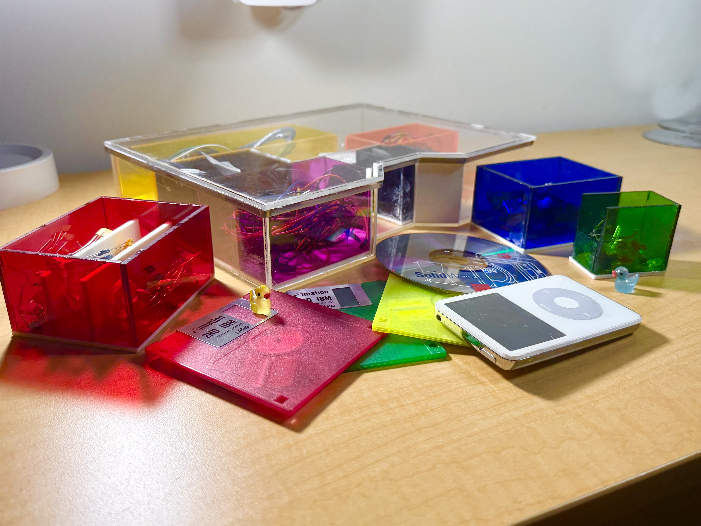
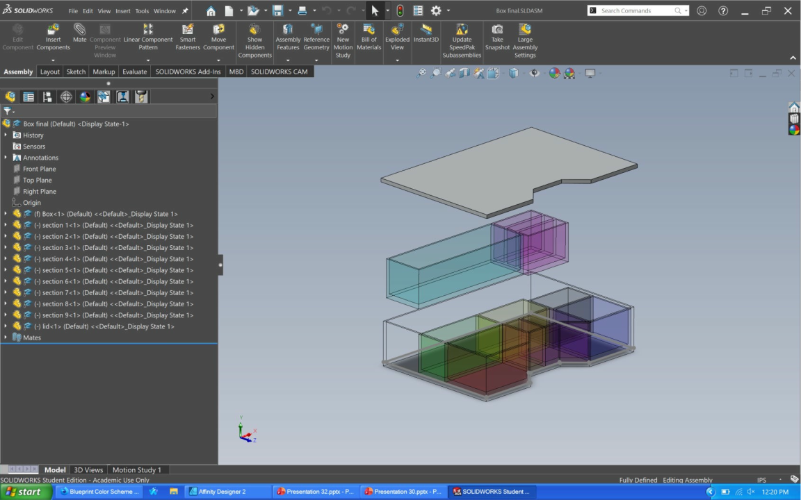
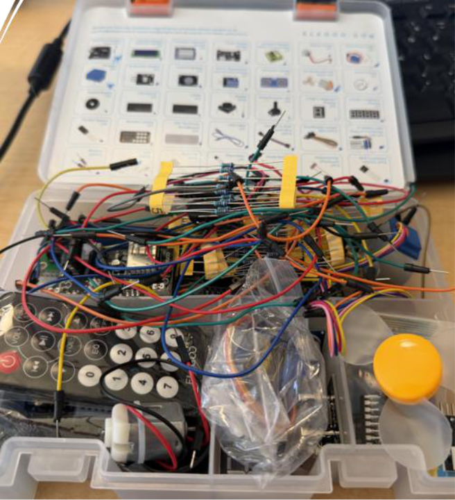
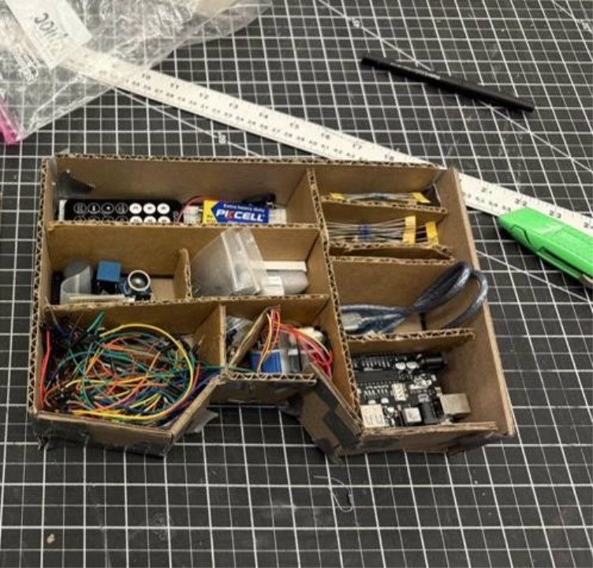
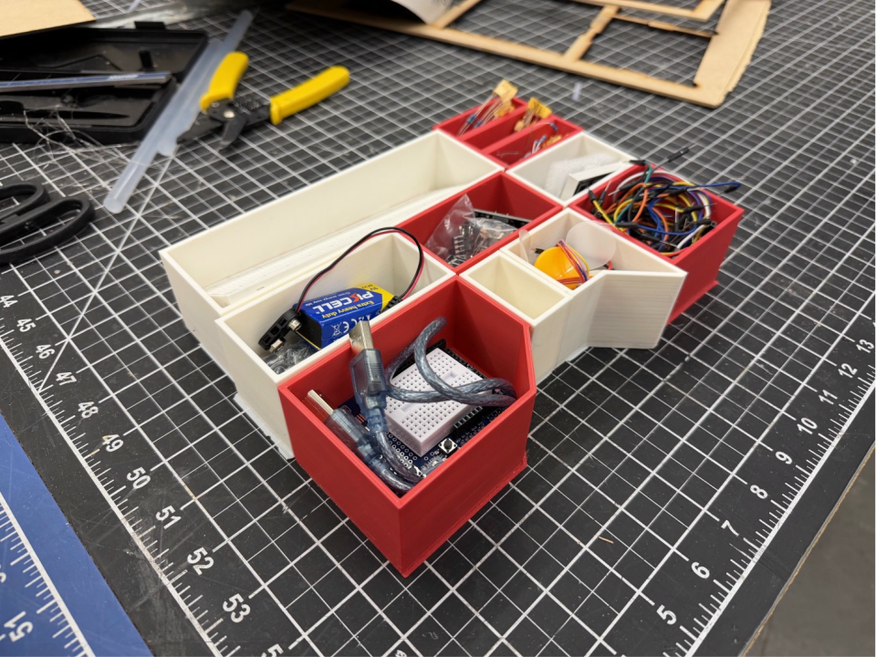
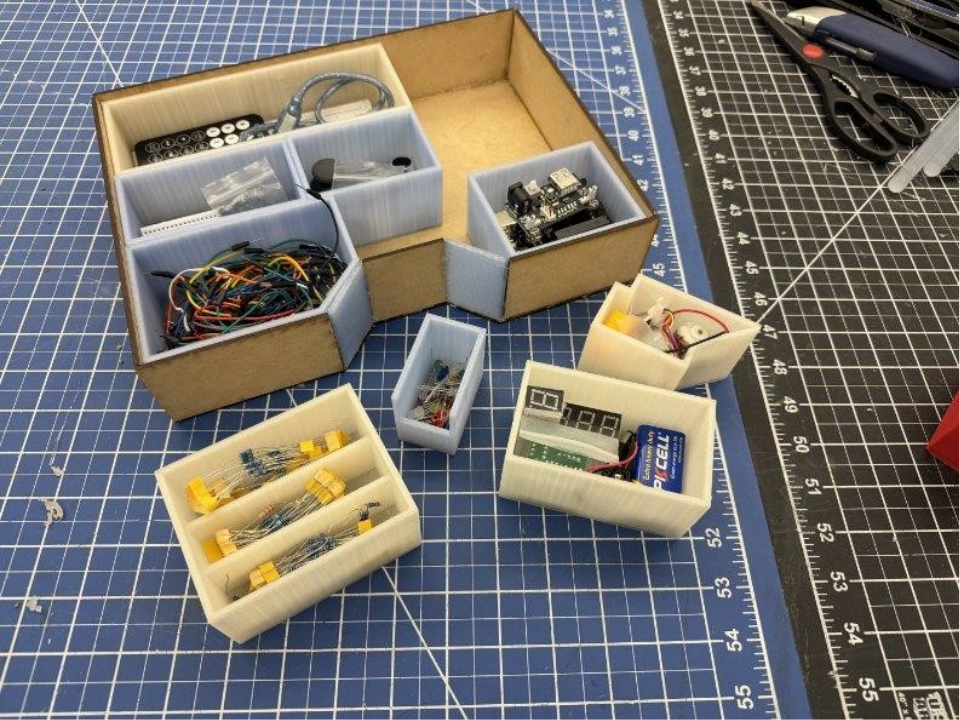
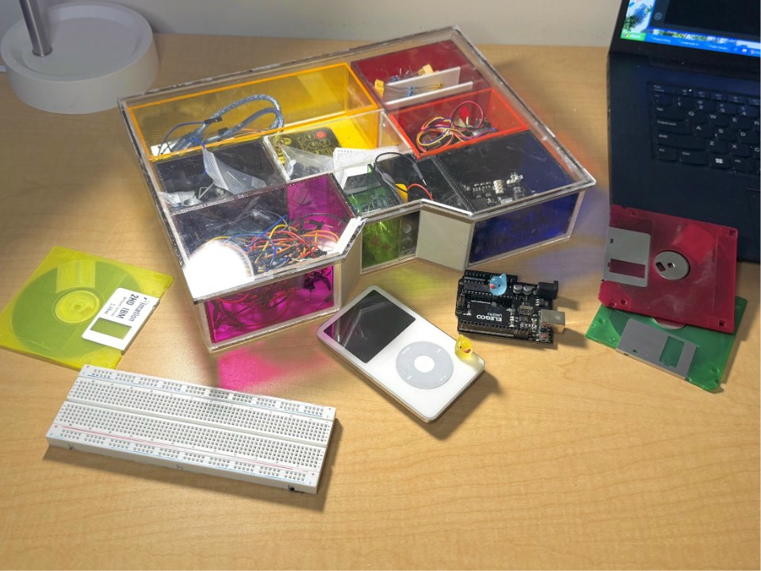
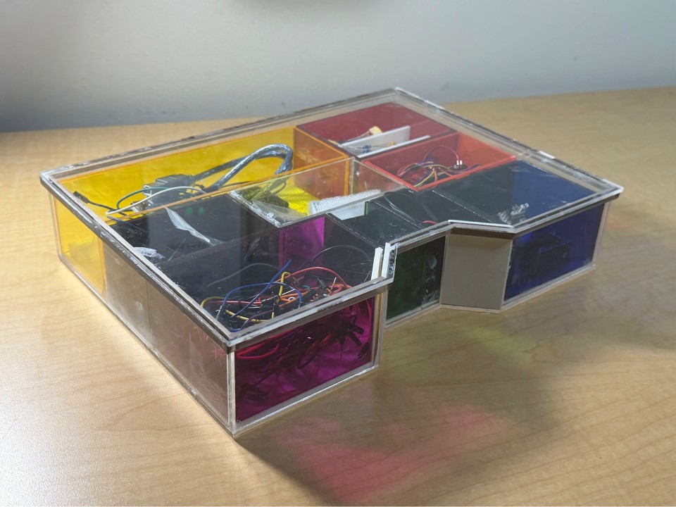
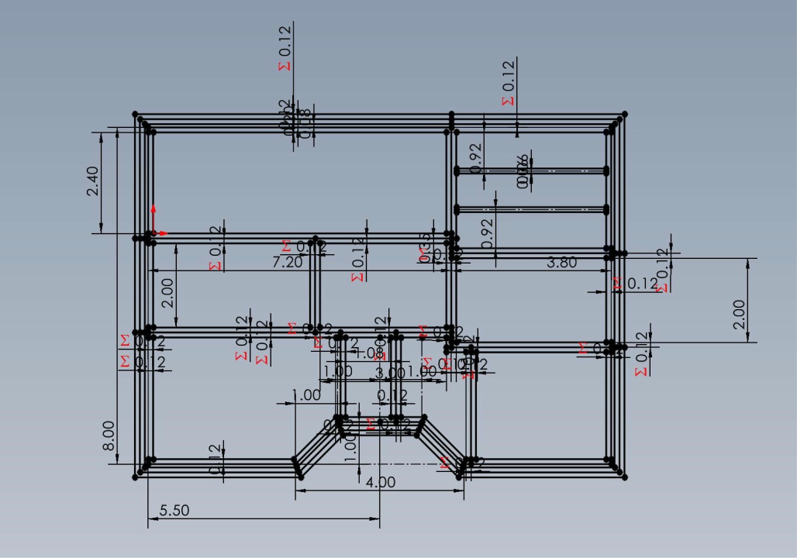
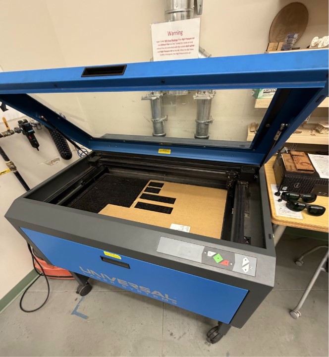
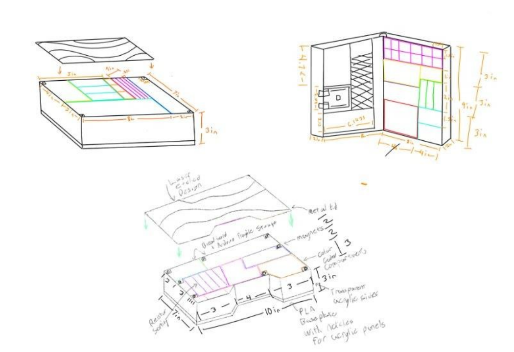
Issue:
The factory-supplied box for the mechatronics kits was difficult to keep organized due to its small size and poor layout. This lack of organization reduced overall efficiency when working with the kits.
Limitations:
The final product must remain portable and compact enough to fit easily into a standard backpack.
Purpose:
Create an improved organizational solution for the ELEGOO mechatronics kits utilized in the Keene State mechatronics curriculum.
Decisions:
The key design decisions for this project involved selecting the mechanical mechanisms to be used and identifying the essential user needs.
Process:
My design process involved several stages, including user research, laser cutting, 3D printing, epoxy welding, and CAD modeling.
Materials:
Colored Acrylic Sheets, Magnets, PLA filament.
How did this solve the problem?
The kit was made larger and the internal compartments were made transparent and modular.
How did this achieve its purpose?
It addressed all major shortcomings of the factory kit. The new design is quick and easy to seal, and it improves overall workflow efficiency by allowing users to locate components much faster.
This project demonstrates my ability to develop a successful product by showing that I can design solutions grounded in user needs research and analysis.